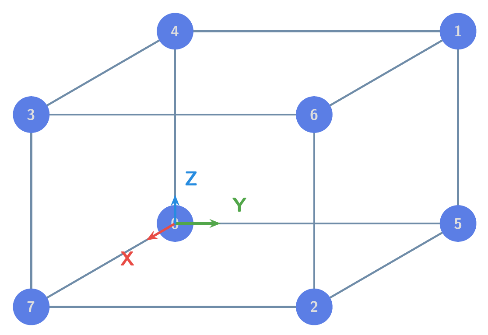

STEP 1 · PREPARATION
Prepare your physical space
Re-create the space in mixed reality, then review its anchors before synchronization.

- Put on your VR glasses and open XR-PALS
- Look around and create the space
- Finish and return to the wizard
REFERENCE
Recommended anchor setup
Use the reference arrangement as a guide when placing your anchors.

Vary anchor heights a bit where possible. Mount the anchors horizontally.